Background
Welcome! This project develops a flexible simulation framework for continuous-wave (CW) time-of-flight (TOF) imaging and uses it to investigate how CW-TOF measurements can be repurposed to achieve single-shot depth estimation through a mechanism analogous to off-axis holography.
Off-axis holography and continuous-wave (CW) time-of-flight (TOF) sensing represent two distinct but mathematically related approaches to recovering scene information from modulated optical signals.
Off-axis holography uses a tilted reference wave to heterodyne the object field in space. The interference pattern contains a shifted cross-term that can be isolated in the Fourier domain, enabling single-shot recovery of the complex optical field (amplitude and phase). This requires spatial filtering but no temporal modulation.
CW-TOF sensing, in contrast, relies on temporal modulation. A modulated illumination signal is reflected by the scene and correlated with a reference waveform inside the sensor through lock-in demodulation. By sampling multiple phase shifts, the system estimates the propagation delay and recovers per-pixel distance.
Although framed differently, both techniques rely on heterodyning and correlation, implemented either optically in space or electronically in time.
We propose a new method that takes advantage of off-axis holography and show that with specific setup of the sensor and light source, the depth of the scene can be reconstructed from one single image. We show the theoretical derivation, reasoning on the detailed setups, and the results produced by our implementation.
From an implementation standpoint, the system is fundamentally a CW-TOF pipeline: light sources emit temporally modulated signals, and the sensor performs lock-in correlation with a reference waveform. The core objective is not to replicate off-axis holography directly, but to show that a properly configured CW-TOF system can reproduce off-axis behavior — and thus recover complex-valued scene information from a single exposure.
Implementation-wise, the system is an entirely CW-TOF pipeline with extra options: light sources emit temporally modulated signals, and the sensor performs lock-in correlation with the reference waveform. The path tracer is extended to support time-resolved propagation, modulated emitters of various types, and modulated sensors capable of gated or heterodyne measurements. This creates a general-purpose environment in which a wide range of spatiotemporal modulation schemes can be tested.
The renderer is built around a time-resolved path tracer with support for a wide set of interchangeable modules, including:
- Modulated Light sources: arbitrary waveform generators, point and line laser scanners
- Modulated Sensors: global-shutter and rolling-shutter detectors
- Auxiliary Controls: configurable per-pixel synchronization between the light source and sensor activation
This modular design enables us to explore a large family of spatiotemporal modulation schemes, many of which cannot be tested easily in real hardware.
Theory-wise , the core contribution is deriving the conditions under which a CW-TOF sensor, combined with spatial heterodyning, produces an isolatable cross-correlation term—equivalent to the off-axis holography cross-term—and can therefore recover a complex field from a single shot. The analysis also reveals that several configurations that appear valid at first glance actually fail due to subtle issues such as spatial–temporal aliasing, mismatch between the heterodyne carrier and the sampling lattice, or destructive mixing of undesired interference terms.
Using the modular simulation framework, we test these insights in rendered experiments. Configurations predicted to succeed do indeed produce clean reconstructions, while the ones predicted to fail exhibit exactly the artifacts anticipated by the theory. The simulator thus serves both as an engineering platform for modulated light transport and as a tool for understanding the delicate conditions under which spatial and temporal heterodyning interact.
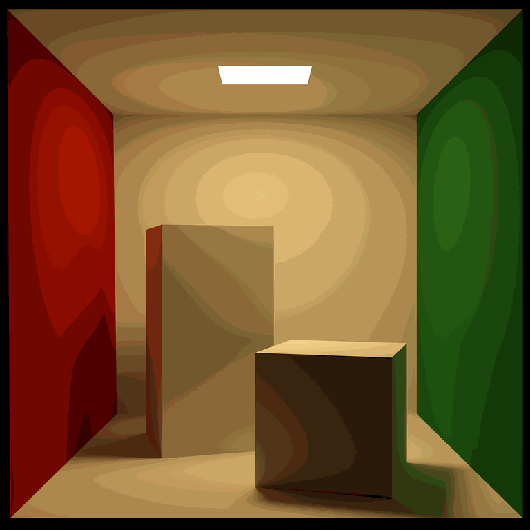
Basic Setup & Derivation
Core idea: When a modulated light signal travels through the scene and reflects off surfaces, the returned waveform carries a measurable delay. Correlating this signal with the known modulation pattern enables recovery of the distance to each point in the scene.
Assume we have such a setup: the original carrier wave \(E_c\) gets sent out and returns after hitting the scene, creating the object wave \(E_o\). The reference wave \(E_r\) is used to control the sensitivity of the sensor for demodulation.
If we send out a plane wave, then each position has the same phase in the carrier wave:
In a normal off-axis holography camera, a tilted plane wave is used to interfere with the object wave. Here, if the sensor supports a rolling-shutter-like functionality that allows different pixels to have a differently phase-shifted demodulation wave, we can do something similar by using a tilted plane wave for demodulation, for example, we add a phase shift that's proportional to x position:
Now we take the cross-correlation between \(E_r\) and \(E_o\):
Frequency convention: κ is an angular spatial frequency in radians per pixel. The transform below uses cycles per pixel, so its sideband shift is κ/(2π). The amplitude A may vary across the image and therefore stays inside the transformed complex field.
If we take the Fourier transformation:
This has 2 components, we call them \(g_1\) and \(g_2\):
Since:
Similarly:
As we can see, from this setup, we expect to see 2 images centered at \([\kappa/(2\pi),0]\) and \([-\kappa/(2\pi),0]\). We can use either of them to reconstruct a hologram that includes the phase \(\phi\) (first shifting it back to the center, then take the inverse Fourier transformation).
A spatially linear phase produces a global Fourier translation. Clean isolation additionally requires sufficient carrier separation, object bandwidth and sampling resolution. A nonlinear carrier is not a simple translation; recovering it would require a different, calibrated reconstruction model.
Observations and Caveats
The setup described above only works under very specific conditions, and not merely because of parameter tuning. There are multiple ways to introduce the carrier and reference waves—through illumination delay, sensor-side tilts, or reference-phase shifts—but only a subset of these configurations produces a usable cross-term. Some tested configurations fail to produce a globally shifted, separable cross-term under this Fourier-crop reconstruction. These are failures of the stated measurement/reconstruction pairing; they do not rule out every calibrated inverse method for a different carrier.
One thing we can notice is that: adding a phase shift on the object wave will have the same effect as adding one to the demodulation wave. Instead of:
we can also do:
For one global Fourier shift-and-crop reconstruction, the convenient condition is that the extra phase shift \(\kappa \cdot x\) is linear with respect to pixel position \(x\). Since the phase shift rate \(\kappa\) directly determines the amount of shift in the frequency domain, if it's not constant across the whole image, that means different frequency component gets shifted differently and there's not a single central frequency shift anymore.
A setup can therefore produce a valid measurement while failing this particular reconstruction. The distinction matters in interpreting the experiments below.
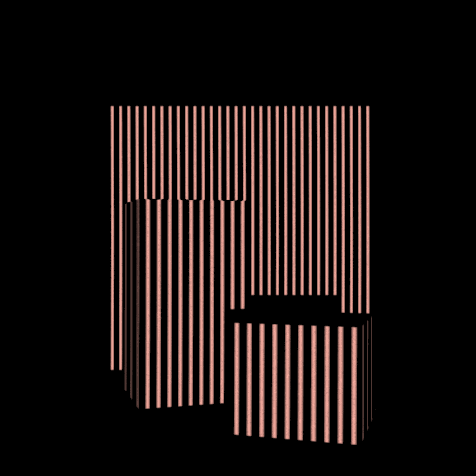
Setups that defeat one global Fourier crop
Sweeping a thin laser source and use an un-tilted plane wave for demodulation.
Using a quad laser light on which different positions activates with a delay depending on the position and an un-tilted plane wave for demodulation.
Using a tilted quad laser light and an un-tilted plane wave for demodulation.
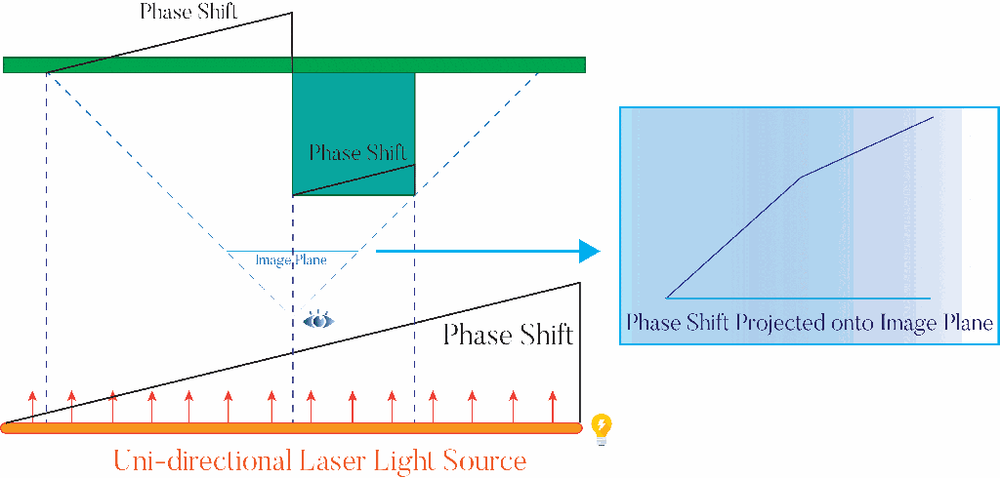
Where does the extra phase come from?
Where does the extra phase come from?
Start from the source-side diagram above. Move the same phase ramp to a calibrated projector or the sensor; vary relief and physical front tilt separately, then inspect the waveform and the image-coordinate fringe pattern.
Computed AMCW path phases and exposure gates. Slow scanning and fast intensity modulation use separate illustrative clocks; this is not optical-field interference.
Suspended · hover to inspect without losing state.
These tested setups share a source-side phase variation; their detailed propagation and calibration need not be identical. The issue here is that the phase code is attached to a position on the light source or in the scene, rather than directly to a position in the image. The position on the light source directly corresponds to the position of the hitpoint in the scene, and this will cause the phase shift/pixel position rate to differ depending on how far the object is. As a result, in the frequency domain, different parts of the scene will be shifted differently and there won't be a central frequency, meaning we can't expect to shift it to the center and demodulate using one single frequency.
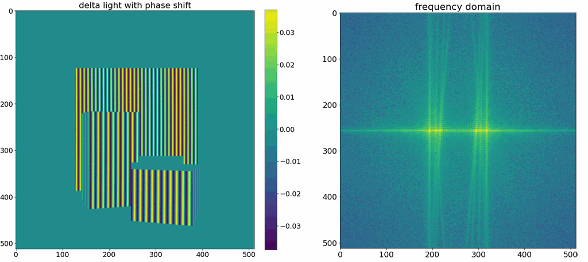
If there're multiple objects at multiple distances, they will be shifted differently in the frequency domain; the same happens if there's one big object with a ramp. If we can first separate the frequency components, this kind of setup could potentially work, but it requires extra work.
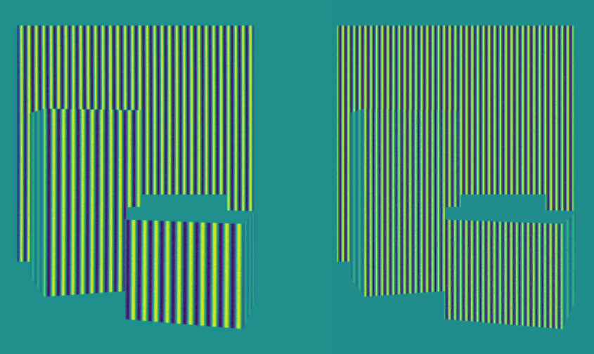
Interactive Fourier diagnostic
Inspect the full inference chain: generate the recorded correlation, locate both sidebands, choose a crop, and compare the recovered wrapped phase with the known object field. Reducing carrier clearance makes DC overlap visible; enabling a depth-coupled carrier reproduces the sideband smearing discussed below.
Fourier sidebands: record, isolate, reconstruct
Fourier sidebands: record, isolate, reconstruct
Control carrier clearance, crop size, sideband choice and noise. Compare optical field interference with CW correlation without confusing their image-formation models.
Draws with
Artifact
Export
Purpose
Made with
Demonstrates
Wheel over the scene may zoom; move outside it to scroll the page.

The live view performs an actual discrete Fourier transform on a synthetic field; the cover is a recorded native example.
Suspended · activate to run; playback pauses after the full panel leaves the vertical viewport.
For a planar phase ramp expressed in world position, an orthographic camera can remove this particular perspective depth dependence. In that restricted case \(\kappa\) doesn't depend on the depth anymore and is constant. Besides using an orthographic camera, there're other easier working setups:
The setups that can work
If we can modulate pixels differently, we can simply make the demodulation wave tilted instead, as discussed above:
A plane wave as the carrier wave and a tilted plane wave for demodulation.
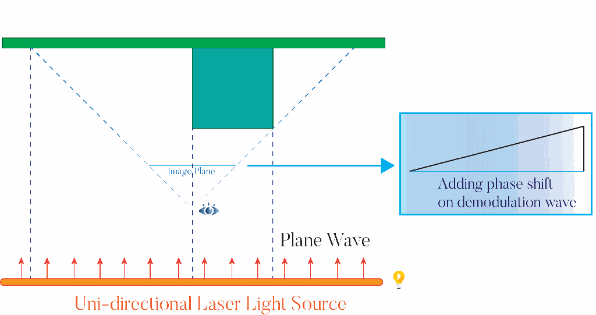
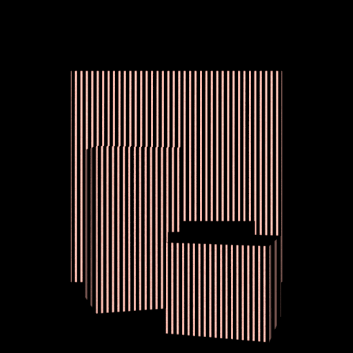
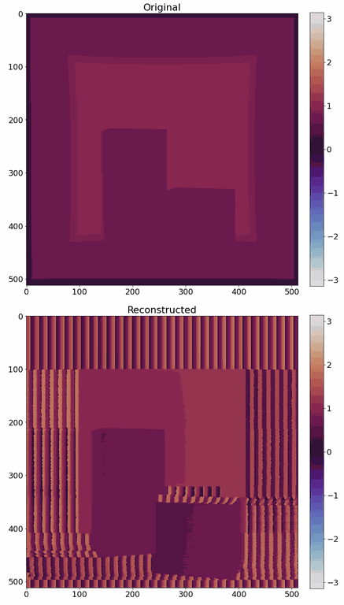
Illumination can vary across the scene while a sensor-side image-linear reference supplies the carrier. Clean reconstruction still depends on nonzero signal, object bandwidth and sideband separation.
A laser projector as the light source and a tilted plane wave for demodulation.
With a laser projector, another option is to add the phase shift on the carrier wave, since it's possible to make the phase shift \(\kappa \cdot x\) if we set it up properly:
A laser projector with phase shift depending on the pixel position as the light source and an un-tilted plane wave for demodulation.
This is easy to implement by using a rotating mirror to reflect a line source, as done in some other papers.
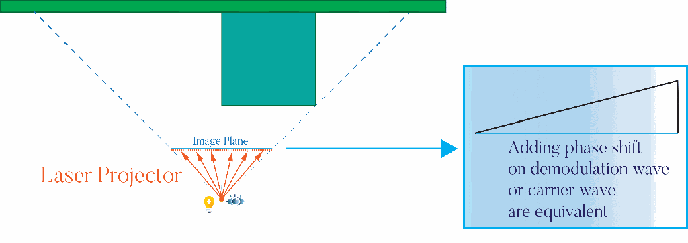
Put the carrier in the right coordinates
A tilted source, a programmed delay and a rolling shutter manipulate different parts of the measurement. This experiment keeps them separate: propagation determines path phase, illumination and sensor codes add phase, and a synchronized exposure selects which source-to-pixel connections are admitted.
Illumination × shutter: measure, isolate, reconstruct
Illumination × shutter: measure, isolate, reconstruct
Try a world-space phase ramp on a relief surface, then move the code to projector or sensor coordinates. Compare global and synchronized exposure while inspecting actual Fourier recovery.
Draws with
Artifact
Export
Purpose
Made with
Demonstrates
Wheel over the scene may zoom; move outside it to scroll the page.
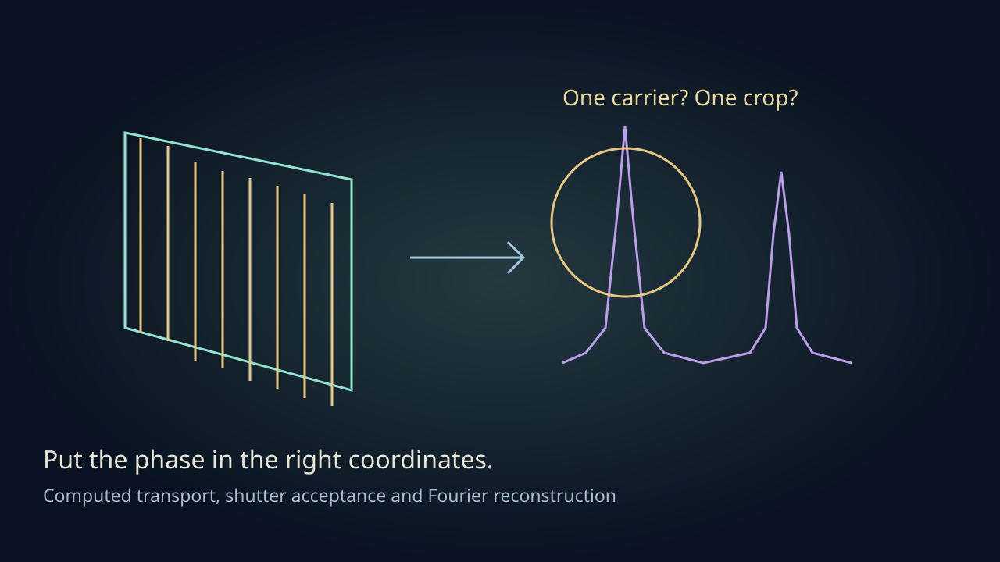
Analytic delays on a finite synthetic transport operator. The four-tap reference uses additional measurements; it is not a native renderer capture.
Suspended · activate to run; playback pauses after the full panel leaves the vertical viewport.
Nonuniform does not mean impossible. One constant image carrier is particularly convenient because it translates the entire object spectrum by one amount. A world-dependent phase can broaden or overlap that spectrum, so one fixed crop can lose information. A calibrated reference, coordinate correction, extra phase measurements or another inverse method may still recover it. The four-tap reference in this experiment is an additional measurement model, not information conjured from a damaged single image.
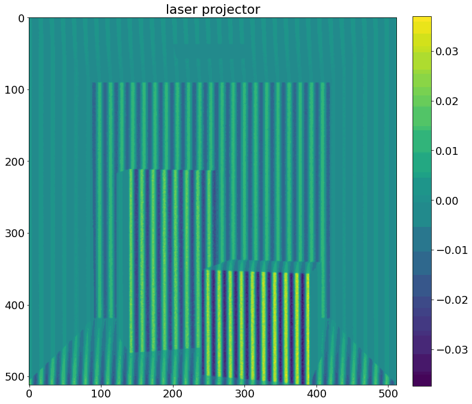
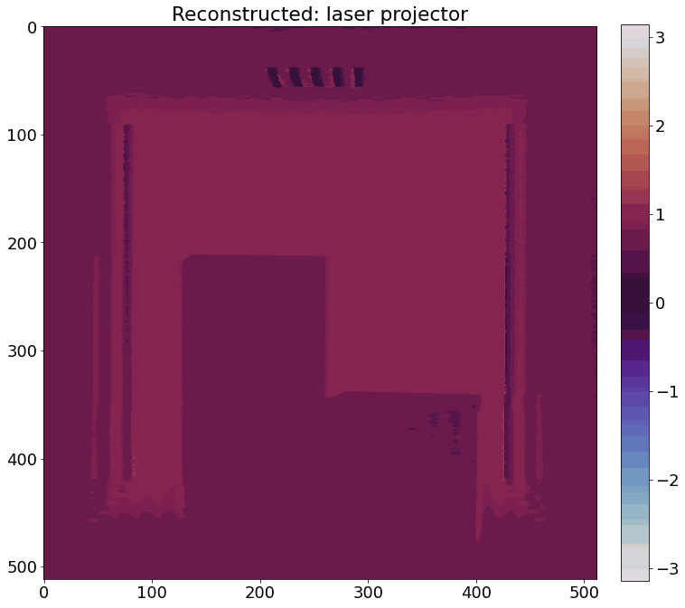
Recovering phase is not yet recovering absolute depth
The complex correlation gives a phase modulo 2π. Under a single direct round-trip model, that means depth modulo c/(2f). A second frequency can extend the interval; it also exposes a tradeoff between long range and sensitivity to phase error.
Wrapped phase → continuous geometry
Wrapped phase → continuous geometry
Recover a continuous depth profile from wrapped measurements. Break the continuity assumption, remove the absolute anchor, then compare with two-frequency recovery.
Draws with
Artifact
Export
Purpose
Made with
Demonstrates
Wheel over the scene may zoom; move outside it to scroll the page.
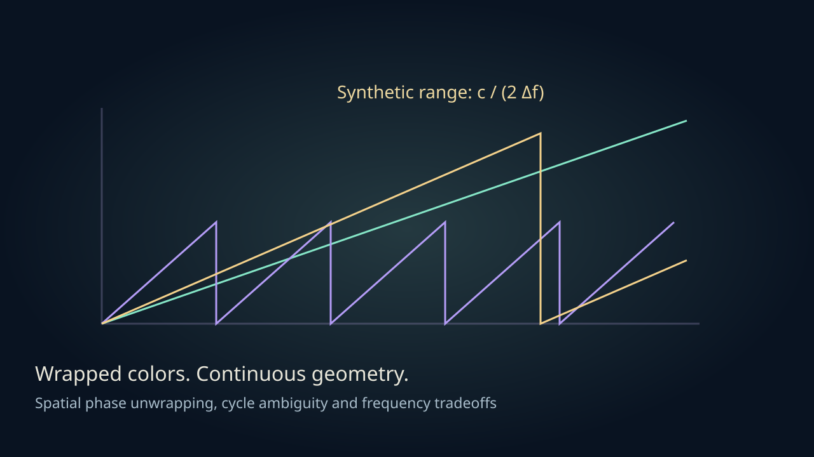
Actual nearest-neighbor phase integration. The error perturbation is synthetic and the model assumes one direct path.
Suspended · activate to run; playback pauses after the full panel leaves the vertical viewport.
Indirect Lighting
In practical environments, light rarely follows a single line-of-sight path. Instead, it undergoes multiple reflections, refractions, and scattering interactions, which introduce higher-order light transport terms that substantially complicate the measurement process.
The previous section focused on direct lighting, but in reality, we expect the light to bounce in the scene multiple times, making the problem more challenging.
Each pixel corresponds to one camera ray hitting one position in the scene. With a laser source, we expect each shaded point in the scene to correspond to one single ray. As a result, each pixel only corresponds to one single path and one single distance.
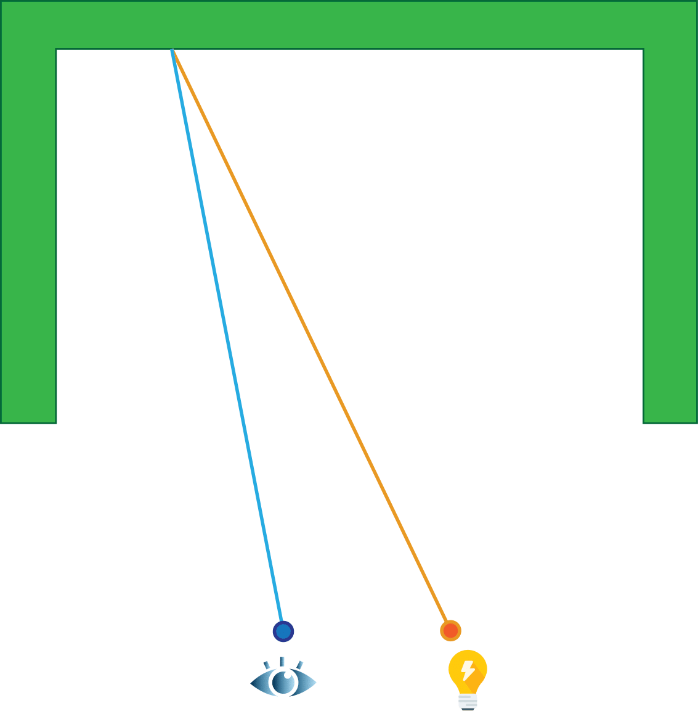
For multi-scatter, this is not the case anymore: although each pixel still only corresponds to one point in the scene, the light that comes to this point can come from any position in the scene, making each pixel correspond to multiple light paths.
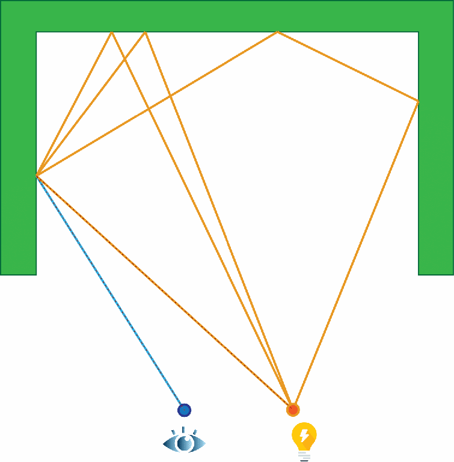
From the paths above to the quantity the sensor measures
Before adding a spatial carrier, inspect the temporal measurement. The sensor adds all returning path contributions, then estimates the phase of that sum. A bright indirect return can bias depth without adding random noise.
How path delays become a measured phasor
How path delays become a measured phasor
Add an indirect return, change its delay, then inspect the four sensor taps and the resulting single-path depth estimate.
Draws with
Artifact
Export
Purpose
Made with
Demonstrates
Wheel over the scene may zoom; move outside it to scroll the page.
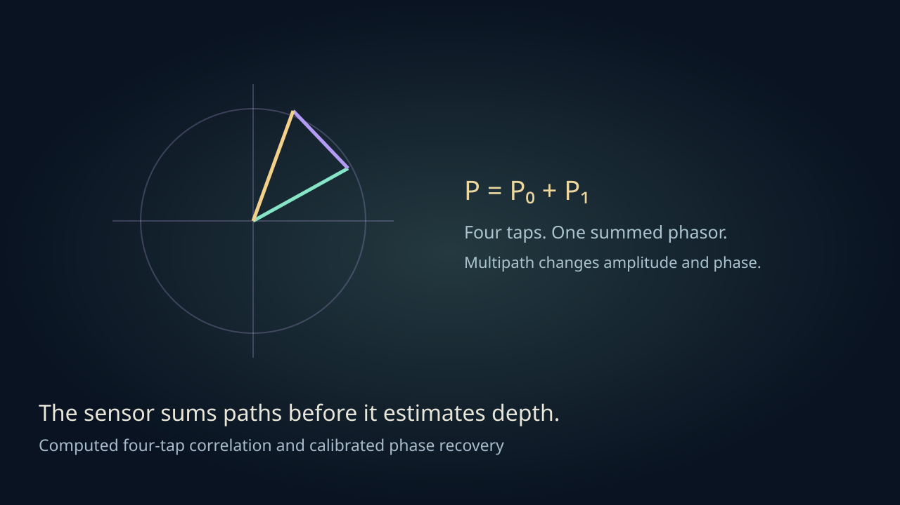
CW intensity modulation and lock-in correlation; this is not optical-carrier interference.
Suspended · activate to run; playback pauses after the full panel leaves the vertical viewport.
A broad path-length distribution can produce a biased or low-amplitude correlation phasor. Finite-sample rendering adds random noise on top of that structured multipath effect. In a real scene dominated by multi-scatter light transport, for example, an indoor scene in which light can bounce multiple times without exiting, this is likely to happen.
There exist papers that deal with extracting information from multi-scatter light transport, but for now, we assume we want to exclude the multi-scatter light transport.
If we use the line-source-sweeping setup, one possible way to reduce indirect transport is by synchronizing the sensor with the sweeping light source: at each scan position, only the corresponding column of pixels is activated. The gate selects source–sensor correspondences. It does not inspect every bounce: an indirect path can leave the active plane and return to an accepted receiver pixel. Same-plane interreflection, near-diagonal scattering and a finite exposure width also limit rejection.
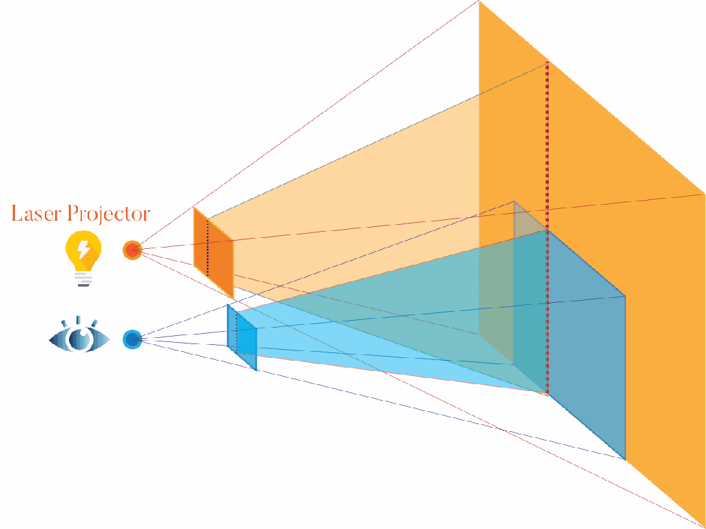
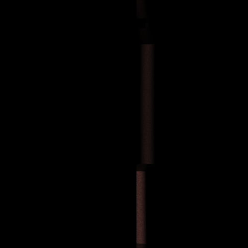
Watch illumination and exposure move together
Watch illumination and exposure move together
Animate a line or point scan beside the sensor. Switch global, column or point-matched exposure; misalign the scan and inspect which indirect paths survive in the measured correlation.
Computed AMCW path phases and exposure gates. Slow scanning and fast intensity modulation use separate illustrative clocks; this is not optical-field interference.
Suspended · hover to inspect without losing state.
Open lambertian scene
In the scene, every material is Lambertian and the scene is not closed (the whole wall on the side of the camera is removed). As a result, multi-scatter contribution is not so strong. In this case, although we can see some noticeable random noise, even without doing anything extra, we can reconstruct the depth without much trouble.
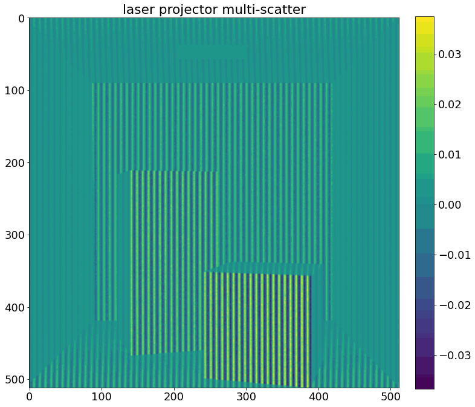
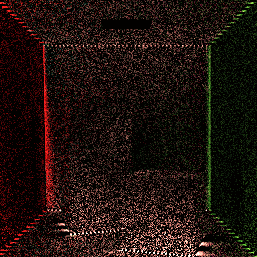
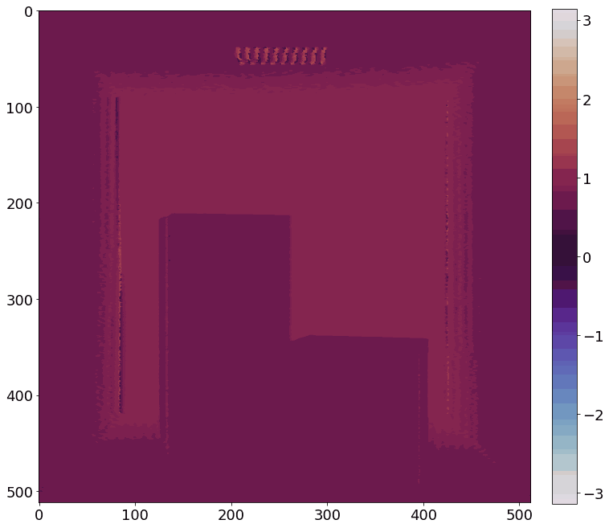
If we visualize only double-scatter, we can see the noise as expected, although it's really dark.
Closed, semi-specular, high-albedo scene
To make the multi-scatter contribution more pronounced, I added a different scene: the shape of the box is similar but the camera and light source are now inside. The material is a rough metal with really high albedo.
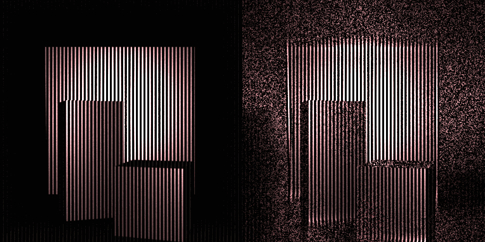
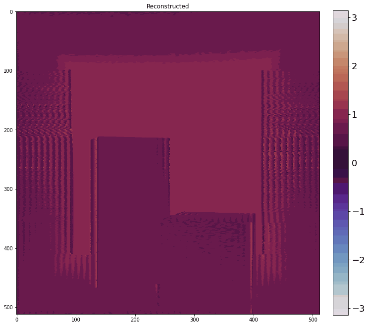
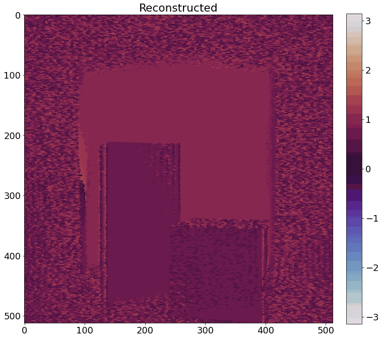
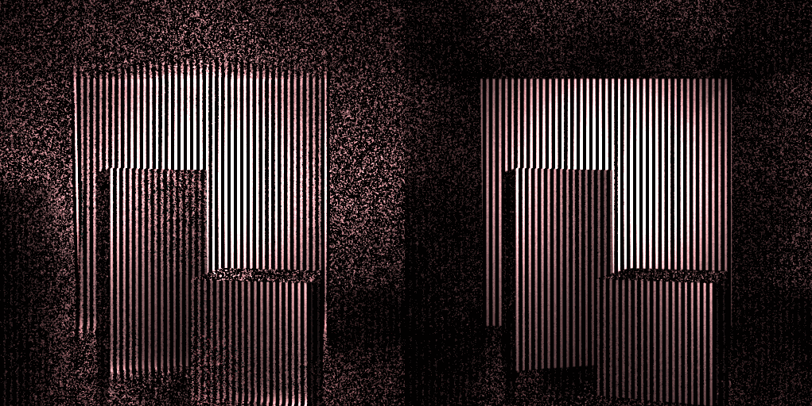
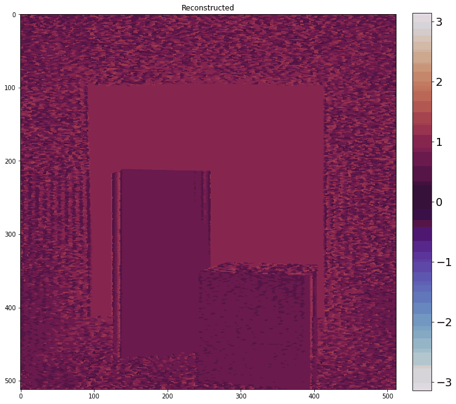
If we only look at double-scatter, we can see that after taking the correlation, instead of forming patterns, large regions will be covered with random noise, as expected.
Conclusions
This project shows that a CW time-of-flight (TOF) imaging system—normally requiring multiple phase-shifted exposures—can be reconfigured to recover depth and complex phase information from a single shot by leveraging principles from off-axis holography. Achieving this is far from straightforward: only a narrow class of spatiotemporal modulation patterns produces an isolatable heterodyne term, and many seemingly valid configurations fail due to subtle geometric and sampling constraints.
The analysis identifies why a spatially linear phase in image coordinates gives a globally shiftable spectral component, subject to bandwidth separation and sampling. Some tested illumination-geometry carriers couple to unknown scene depth and lose that simple structure. Retuning a Fourier crop does not repair the model mismatch; a different calibrated inverse problem would be needed.
On the engineering side, the project introduces a general-purpose, time-resolved simulation framework capable of evaluating a wide family of modulation schemes. This required extending a path tracer with modulated emitters and sensors, rolling/global-shutter behavior, waveform-controlled demodulation, and per-pixel synchronization. These tools let the experiment expose the measurement process as well as the final image. The simulator makes it possible to probe subtle interactions between optical coding and light transport that would be extremely difficult to isolate on hardware.
Finally, we analyze and address a major practical obstacle: multi-scatter contamination. Through controlled experiments, we show how higher-order transport destroys the sinusoidal structure needed for holographic recovery, and we demonstrate that synchronizing illumination and sensor activation can suppress most of these contributions even in high-albedo scenes.